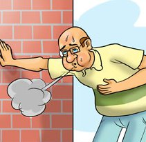
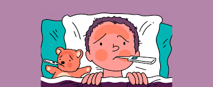

Shortness of breath
Rise in temperature of body
Nausea

Cough

Precautions to be taken:-
- Wash your hands frequently
- Avoid touching eyes, nose and mouth
- Practice respiratory hygiene
- If you have fever, cough and difficulty breathing, seek medical care early
(Why? When someone coughs or sneezes they spray small liquid droplets from their nose or mouth which may contain virus. If you are too close, you can breathe in the droplets, including the COVID-19 virus if the person coughing has the disease.)
(Why? Hands touch many surfaces and can pick up viruses. Once contaminated, hands can transfer the virus to your eyes, nose or mouth. From there, the virus can enter your body and can make you sick.)
(Why? Droplets spread virus. By following good respiratory hygiene you protect the people around you from viruses such as cold, flu and COVID-19. )
( Why? National and local authorities will have the most up to date information on the situation in your area. Calling in advance will allow your health care provider to quickly direct you to the right health facility. This will also protect you and help prevent spread of viruses and other infections.) )